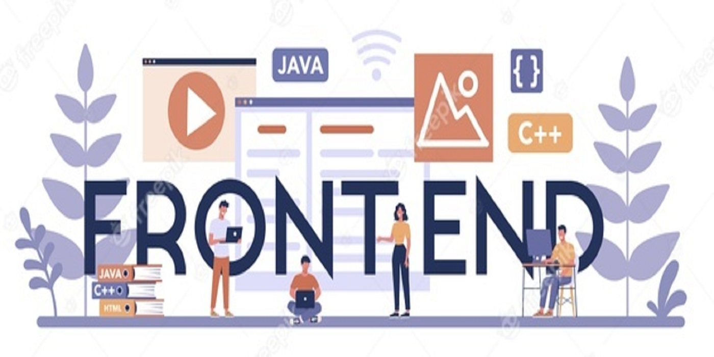

Amanda Letícia Camelo
Meu mundo Dev!

- Sou Desenvolvedora Front-End, adoro criar experiências incríveis através de interfaces elegantes e
funcionais que ajudam as pessoas na web, no mobile ou qualquer outro dispositivo. Sou fascinada em planejar
cada detalhe de uma página que podem guiar o olhar dos usuários para encontrar o que eles estão procurando.